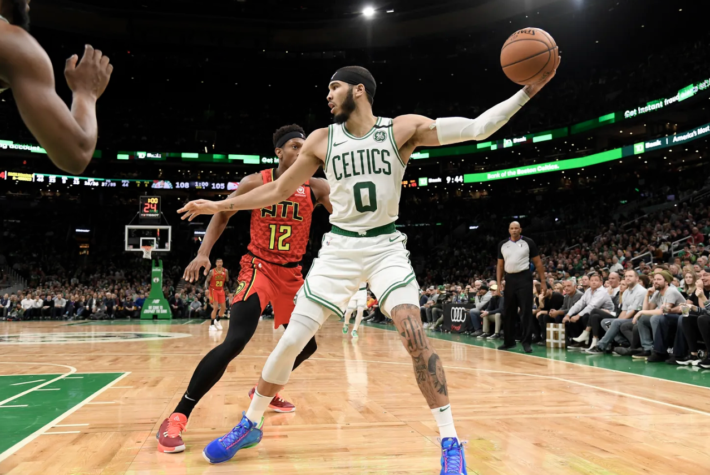

Jayson Tatum is an American Professional basketball player. Originally from St. Lous, Missouri, Tatum played college basketball at Duke before getting drafted by the Boston Celtics in 2017.
Bio by Mack Anderson

Jayson Tatum's best performance came during a regular season game against the San Antonio Spurs in 2021. Tatum and the Celtics were losing by 32 points before he exploded for 60 points on his own in an overtime comeback win, tying NBA Hall of Famer Larry Bird for the franchise record at just 22 years old.